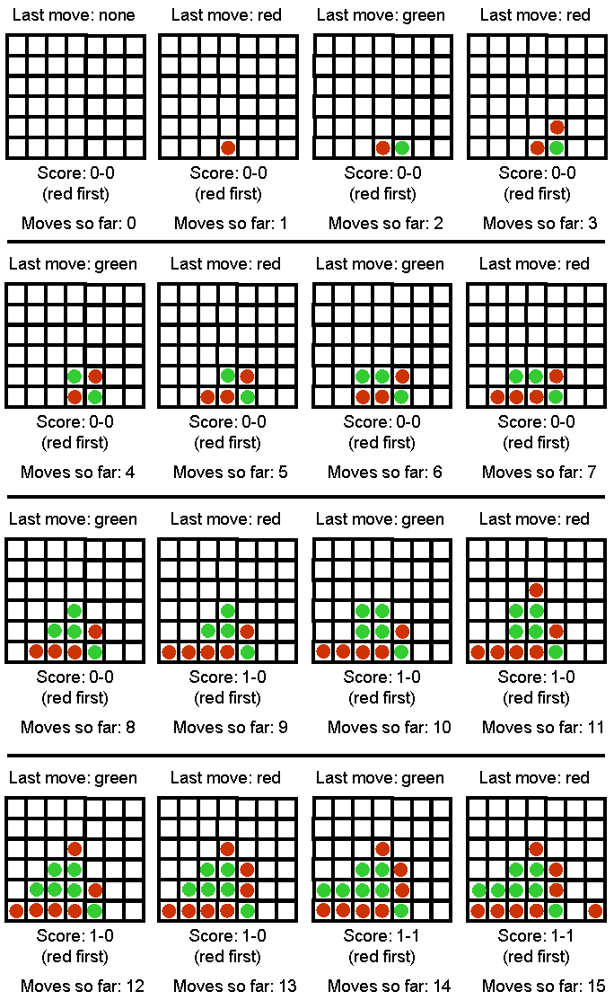

Assignment 4
Programming Assignment - Game Playing Algorithms
Task
The task in this
programming assignment is to implement an agent that
plays the Max-Connect4 game using search. Figure 1 shows the first few
moves of a game. The game is played on a 6x7 grid, with six rows and
seven columns. There are two players, player A (red) and player B
(green). The two players take turns placing pieces on the board: the
red player can only place red pieces, and the green player can only
place green pieces.
It is best to think of the board as standing upright. We will assign a
number to every row and column, as follows: columns are numbered from
left to right, with numbers 1, 2, ..., 7. Rows are numbered from bottom
to top, with numbers 1, 2, ..., 6. When a player makes a move, the move
is completely determined by specifying the COLUMN where the piece will
be placed. If all six positions in that column are occupied, then the
move is invalid, and the program should reject it and force the player
to make a valid move. In a valid move, once the column is specified,
the piece is placed on that column and "falls down", until it reaches
the lowest unoccupied position in that column.
The game is over when all positions are occupied. Obviously, every
complete game consists of 42 moves, and each player makes 21 moves. The
score, at the end of the game is determined as follows: consider each
quadruple of four consecutive positions on board, either in the
horizontal, vertical, or each of the two diagonal directions (from
bottom left to top right and from bottom right to top left). The red
player gets a point for each such quadruple where all four positions
are occupied by red pieces. Similarly, the green player gets a point
for each such quadruple where all four positions are occupied by green
pieces. The player with the most points wins the game.
Your program will run in two modes: an interactive mode, that is best
suited for the program playing against a human player, and a one-move
mode, where the program reads the current state of the game from an
input file, makes a single move, and writes the resulting state to an
output file. The one-move mode can be used to make programs play
against each other. Note that THE PROGRAM MAY BE EITHER THE RED OR THE
GREEN PLAYER, THAT WILL BE SPECIFIED BY THE STATE, AS SAVED IN THE
INPUT FILE.
As part of this assignment, you will also need to measure and report
the time that your program takes, as a function of the number of moves
it explores. All time measurements should report CPU time, not total
time elapsed. CPU time does not depend on other users of the system,
and thus is a meaningful measurement of the efficiency of the
implementation.

Figure 1: Sample Max-Connect Game (15 moves in)
Interactive Mode
In the interactive mode, the game should run from the command line with
the following arguments (assuming a Java implementation, with obvious
changes for C++ or other implementations):
java
maxconnect4
interactive [input_file] [computer-next/human-next]
[depth]
For example:
java maxconnect4
interactive input1.txt computer-next 7
- Argument interactive specifies that the program runs in
interactive
mode.
- Argument [input_file] specifies an input file that contains
an initial
board state. This way we can start the program from a non-empty board
state. If the input file does not exist, the program should just create
an empty board state and start again from there.
- Argument [computer-first/human-first] specifies whether the
computer
should make the next move or the human.
- Argument [depth] specifies the number of moves in advance
that the
computer should consider while searching for its next move. In other
words, this argument specifies the depth of the search tree.
Essentially, this argument will control the time takes for the computer
to make a move.
After reading the input file, the program gets into the following loop:
- If computer-next, goto 2, else goto 5.
- Print the current board state and score. If the board is
full, exit.
- Choose and make the next move.
- Save the current board state in a file called computer.txt
(in same
format as input file).
- Print the current board state and score. If the board is
full, exit.
- Ask the human user to make a move (make sure that the move
is valid,
otherwise repeat request to the user).
- Save the current board state in a file called human.txt (in
same format
as input file).
- Goto 2.
One-Move Mode
The purpose of the one-move mode is to make it easy for programs to
compete against each other, and communicate their moves to each other
using text files. The one-move mode is invoked as follows:
java
maxconnect4
one-move [input_file] [output_file] [depth]
For example:
java maxconnect4
one-move red_next.txt green_next.txt 5
In this case, the program simply makes a single move and terminates. In
particular, the program should:
- Read the input file and initialize the board state and
current score,
as in interactive mode.
- Print the current board state and score. If the board is
full, exit.
- Choose and make the next move.
- Print the current board state and score.
- Save the current board state to the output file IN EXACTLY THE SAME
FORMAT THAT IS USED FOR INPUT FILES.
- Exit
Sample code
The sample code needs an input file to run. Sample input files that you
can download are input1.txt
and input2.txt.
You are free to make other
input files to experiment with, as long as they follow the same format.
In the input files, a 0 stands for an empty spot, a 1 stands for a
piece played by the first player, and a 2 stands for a piece played by
the second player. The last number in the input file indicates which
player plays NEXT (and NOT which player played last). Sample code is
available in:
- Java: download files maxconnect4.java,
GameBoard.java,
and
AiPlayer.java.
Compile on omega using:
javac
maxconnect4.java GameBoard.java AiPlayer.java
An example command line that runs the program (assuming that you have
input1.txt saved in the same directory) is:
java maxconnect4
one-move input1.txt output1.txt 10
- C++: download file maxconnect4.cpp.
Compile on omega using:
g++ -o maxconnect4
maxconnect.cpp
An example command line that runs the program (assuming that you have
input1.txt saved in the same directory) is:
maxconnect4 one-move
input1.txt output1.txt 10
- Python (Version 2.4): download file maxconnect4.py
and
MaxConnect4Game.py.
An example command line that runs the program (assuming that you have
input1.txt saved in the same directory) is:
./maxconnect4.py
one-move input1.txt output1.txt 10
The sample code implements a system playing max-connect4 (in one-move
mode only) by making random moves. While the AI part of the sample code
leaves much to be desired (your assignment is to fix that), the code
can get you started by showing you how to represent and generate board
states, how to save/load the game state to and from files in the
desired format, and how to count the score (though faster
score-counting methods are possible).
Measuring Execution Time
You can measure the execution time for your program on omega by
inserting the word "time" in the beginning of your command line. For
example, if you want to measure how much time it takes for your system
to make one move with the depth parameter set to 10, try this:
time java maxconnect4 one-move red_next.txt green_next.txt 10
Your output will look something like:
real 0m0.003s
user 0m0.002s
sys 0m0.001s
Out of the above three lines, the user
line is what you should report.
Grading
The assignments will be graded out of 100 points. There is also upto 15
possible extra credit points.
- 40 points: Implementing plain minimax.
- 25 points: Implementing alpha-beta pruning (if correctly
implemented, will algo get 40 points for plain minimax, you don't need to
have separate implementation for it)
- 20 points: Implementing the depth-limited version of
minimax (if
correctly implemented, and includes alpha-beta pruning, you also get
the 40 points for plain minimax and 25 points for alpha-beta search,
you don't need to
have separate implementations for those).
- For full
credit, you obviously need to come up with a reasonable evaluation
function to be used in the context of depth-limited search.
- A
"reasonable" evaluation function is defined to be an evaluation
function that allows your program to consistently beat a player who just plays randomly.
- 5 points: Include a file, eval_explanation.txt (can also
use .pdf, .doc or .docx),
that explains the evaluation function used for depth-limited search.
- 10 points: Include in your submission an
accurate table
of depth limit vs CPU runtime (for making a single move using one move mode) when the board is
empty. Document the number of measurements for each entry on the table.
All measurements should be performed on omega. Your table should
include every single depth, until (and including) the first depth for
which the time exceeds one minute.
How to submit
Implementations in C, C++, Java, and Python will be accepted. If you
would like to use another language, make sure it will compile on omega
and clear it with the instructor beforehand. Points will be taken off
for failure to comply
with this requirement.
The assignment should be submitted via Blackboard. Submit a
ZIPPED
directory called assignment4_<net-id>.zip (no other forms
of compression
accepted, contact the instructor or TA if you do not know how to
produce .zip files). The directory should contain source code.
Including binaries that work on omega (for Java and C++) is optional.
The submission should also contain a file called readme.txt, which
should specify precisely:
- Name and UTA ID of the student.
- What programming language is used.
- How the code is structured.
- How to run the code, including very specific compilation
instructions,
if needed. Instructions such as "compile using g++" are
NOT considered specific.
- Do you want to participate in the tournament (Make sure
your code is eleigible. Invalid
code will be Penalized!!).
- Insufficient or unclear instructions will be penalized by
up to 10
points.
- Code that
does not run on omega machines gets MAX of 75 points.
Submission checklist
Is the code running on omega?
Does the submission include eval_explanation.txt?
Does the submission include the table of depth limit vs runtime?
Does the submission include a readme.txt file, as specified?